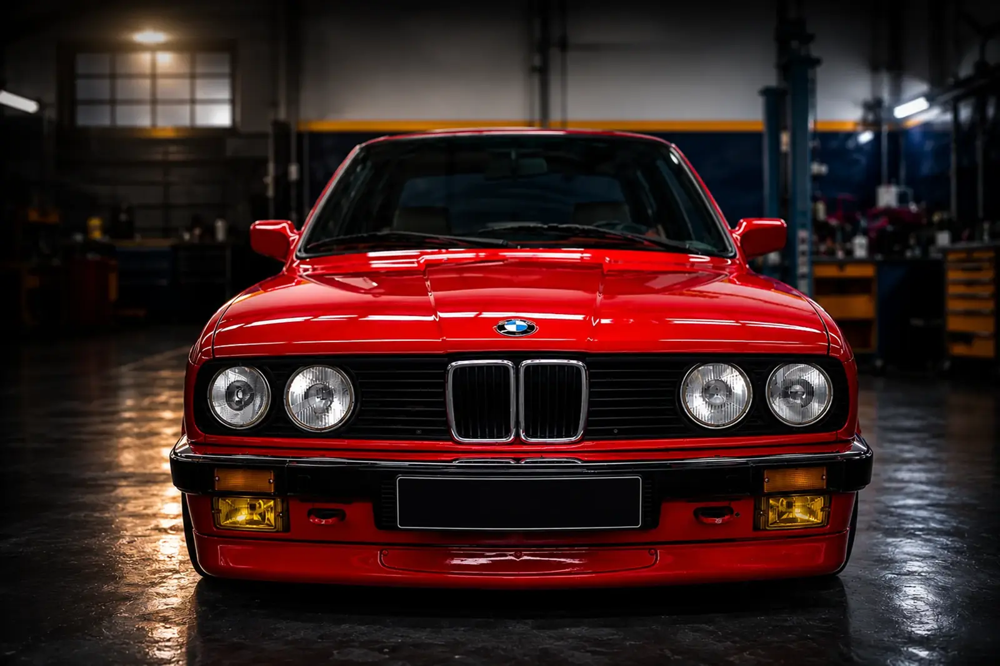
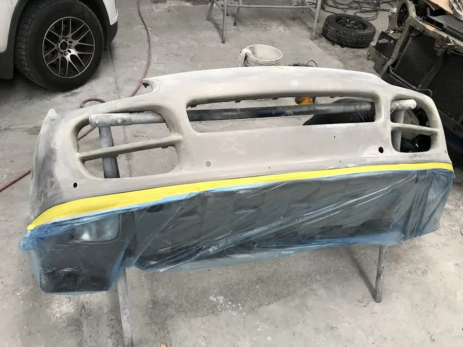
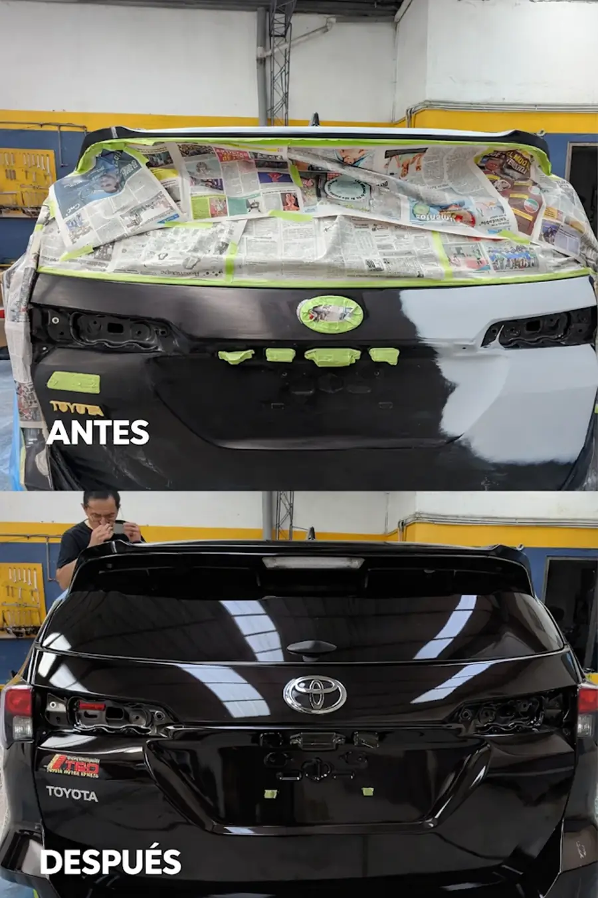
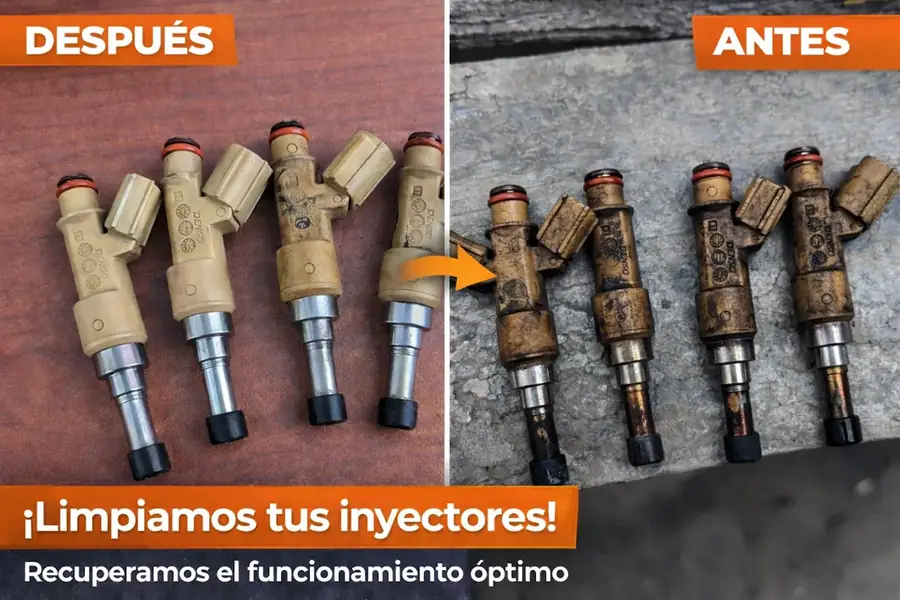
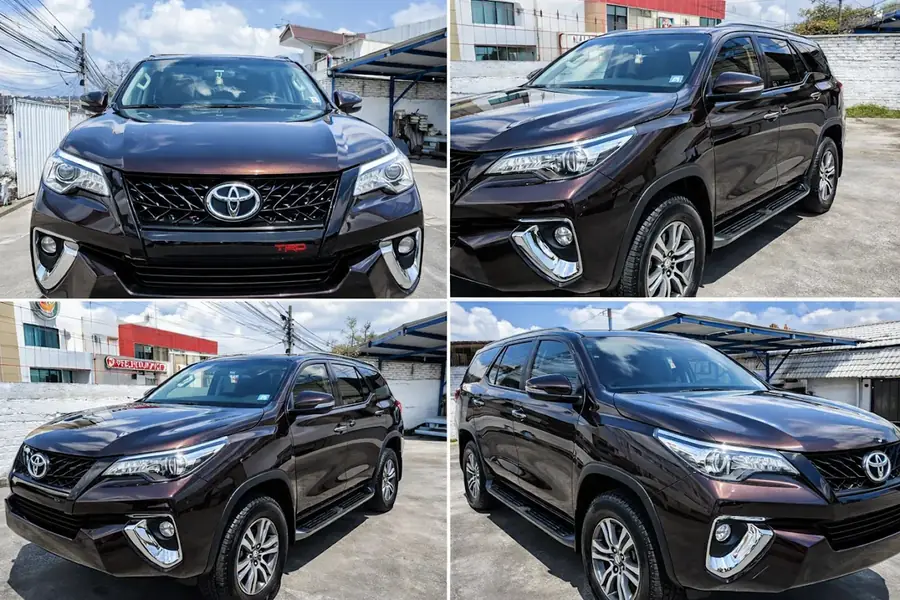
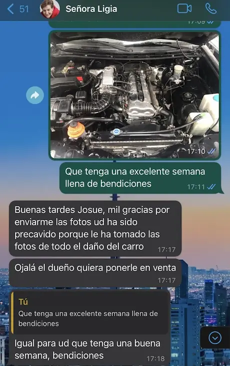
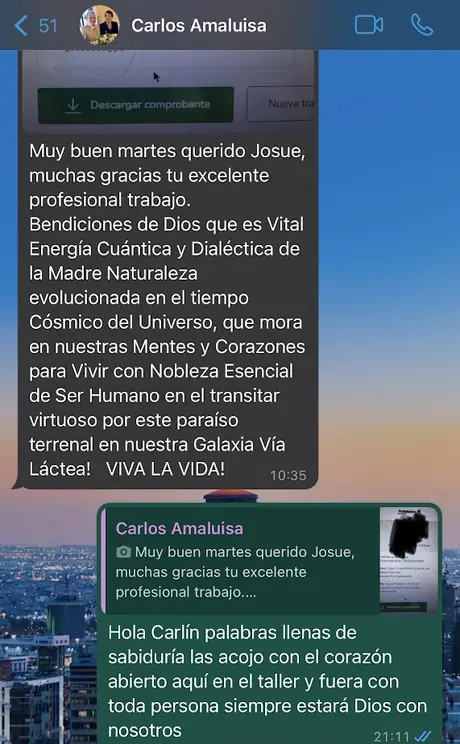

Trabajos reales
Imágenes del proceso y el resultado, no fotografías genéricas de internet.

Taller automotriz en Ambato
Revisamos tu caso antes de reparar y te explicamos qué conviene hacer: choques, pintura, frenos, suspensión y mantenimiento en el sector Huachi Chico.
Taller real, no stock
En reparación automotriz la confianza se gana mostrando el trabajo. Priorizamos fotos reales de vehículos atendidos, ubicación verificable y contacto directo con FINECAR Bodyshop.


Problemas que solucionamos
Primero revisamos el caso y te explicamos qué necesita el vehículo. La prioridad es carrocería y pintura; mantenimiento y mecánica general son la segunda línea de servicio.
Enderezada de chasis, ajuste de piezas y recuperación de carrocería.
Ver detalleEvaluación del daño para definir reparación, pulido o pintura.
Pintura al horno, corrección de color, brillo, piezas y acabados especiales.
Ver detalleRevisión preventiva, fluidos, filtros, frenos y mecánica general.
Ver detalleReparación de choques
Evaluamos el daño visible, la alineación de piezas y el estado de la pintura para definir una reparación ordenada. Puedes enviar fotos por WhatsApp o agendar una inspección cuando el daño necesite revisión presencial.
Pintura automotriz
Pintura de piezas al mismo color, brillo directo, barniz, tricapa para vehículos modernos, perlados y acabados mate. En la rama de pintura ofrecemos garantía de hasta 2 años según el trabajo realizado.
Proceso de trabajo
Un proceso simple para que sepas qué necesita tu auto, qué se va a reparar y cuándo conviene revisarlo directamente en el taller.
Muestras el golpe, rayón o falla para recibir una orientación inicial por WhatsApp.
Te indicamos si se puede orientar con fotos o si conviene una inspección presencial.
Explicamos el alcance de la reparación, pintura o mantenimiento antes de comenzar.
Trabajamos lo autorizado y revisamos acabado, ajuste y detalles antes de la entrega.
El primer paso puede ser una foto clara del daño.
Enviar fotos por WhatsAppCasos reales · antes y después
Mira trabajos reales de FINECAR y envía fotos de tu vehículo para recibir una orientación inicial antes de agendar una inspección.







Caso documentado
Las fotos antes/después ayudan a que el cliente vea el trabajo realizado y entienda por qué una revisión previa es importante.
Si tu vehículo tiene un golpe, rayón o daño de pintura, envía fotos claras por WhatsApp.
Enviar fotos por WhatsAppTestimonios reales
Capturas reales de conversaciones por WhatsApp con clientes de FINECAR Bodyshop.




Mantenimiento preventivo
Atendemos cambios de aceite, filtros, fluidos, frenos, suspensión, ABC de motor, revisión general y mantenimiento correctivo. Esta línea complementa nuestro trabajo principal de carrocería y pintura.
Por qué elegir FINECAR
FINECAR atiende a conductores que necesitan resolver choques, pintura, rayones o mantenimiento sin procesos confusos. Antes de comenzar, buscamos que entiendas qué se va a hacer y por qué.
Preguntas frecuentes
Envía fotos del daño por WhatsApp e indica marca, modelo y año del vehículo. Si hace falta, se coordina una revisión presencial.
Envía una foto general del vehículo, una foto cercana del daño y otra desde un ángulo lateral para ver profundidad, forma y piezas afectadas.
La rama de pintura puede tener garantía de hasta 2 años según el tipo de trabajo realizado.
FinecarBodyShop atiende Ambato y alrededores.
Sí, hacemos mantenimiento preventivo, correctivo y mecánica general. No ofrecemos servicio de cajas automáticas.
Contacto
Atendemos en Ambato, en Cervantes y Río Cosanga, sector Huachi Chico.
FINECAR Bodyshop